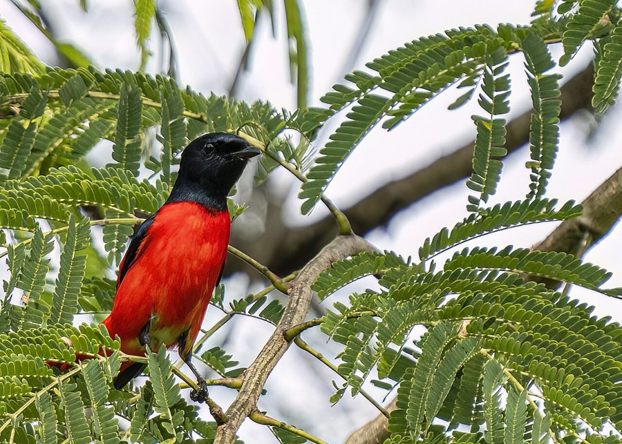

स्कार्लेट मिनिवेटScarlet Minivet
Pericrocotus speciosus · Campephagidae · BRD-0351

- Scientific name वैज्ञानिक नाम
- Pericrocotus speciosus (Latham, 1790)
- Family कुल
- Campephagidae
- Hindi हिंदी
- स्कार्लेट मिनिवेट
- Local names स्थानीय नाम
- scarlet minivet
- Status here यहाँ की स्थिति
- native
- Movement आवागमन
- Resident, here all year
- Known from कहाँ दर्ज
- Others have published records from the Basti–Ayodhya districts बस्ती–अयोध्या के ज़िलों से दूसरों के प्रकाशित अभिलेख
- IUCN IUCN
- LC
- Review समीक्षा
- not yet reviewed
When to look कब देखें
Present all year. साल भर मौजूद।
Tell it apart from इनसे अलग पहचानें
स्कार्लेट मिनिवेट / Scarlet Minivet
Pericrocotus speciosus (Latham, 1790) — Campephagidae
स्कार्लेट मिनिवेट — हिमालय के जंगलों का चमकीला पक्षी। बेकर (1924) के अनुसार नर का सिर, गर्दन और पीठ चमकदार काले और दुम व नीचे का पूरा भाग लाल होता है; मादा का माथा नारंगी-पीला, पीठ धूसर और नीचे का भाग चमकीला पीला होता है। सर्दियों में यह बीस या अधिक पक्षियों के झुंड में ऊंचे पेड़ों पर रहता है और डालियों में कीड़े खोजता है या उन्हें हवा में पकड़ता है।
Quick Identification त्वरित पहचान
| Feature | Description |
|---|---|
| Habit | Highly arboreal, gregarious canopy insectivore of moist deciduous and evergreen forests |
| Size | Largest of the minivets, slender and long-tailed, noticeably larger than a Little Minivet |
| Male Plumage | Glossy black head, throat, and mantle contrasting brilliantly with fiery scarlet breast, belly, rump, and outer tail feathers (Baker 1924, p. 319) |
| Female Plumage | Ash-grey above with orange-yellow forehead and narrow supercilium; bright yellow below (Baker 1924, p. 319) |
| Wings | Black with a broad, conspicuous scarlet (male) or yellow (female) wing patch |
| Bill & Legs | Black bill and slender black legs |
| Movement | Restless; hunts among the branches or seizes insects in the air (Baker 1924, p. 321) |
Field tip: Look in tall trees for flocks of scarlet-and-black males and yellow-and-grey females flitting one after another from tree to tree.
हिंदी:
नर का रंग गहरा काला व चमकदार लाल और मादा का रंग स्लेटी व नींबू जैसा पीला होता है; यह ऊंचे पेड़ों पर रहता है।
Morphology आकारिकी
Measurements as given by Baker (1924):
| Measurement | Range |
|---|---|
| Biometrics | Total length about 230 mm. ; wing 96 to 106 mm. ; tail 86 to 100 mm. ; tarsus about 18 mm. ; culmen about 14 to 15 mm. (Baker 1924 as Pericrocotus speciosus speciosus) |
Stuart Baker (1924, p. 319) described the male: "Whole head, neck, back, scapulars and lesser wing-coverts glossy black; rump, upper tail-coverts and whole lower plumage scarlet". The female has "forehead and short narrow supercilium orange-yellow, paler posteriorly and changing to grey on the posterior crown, back" (Baker 1924, p. 319). Bill, legs and feet are black.
Vocalisations. Stuart Baker (1924, p. 321) described the voice: "a shrill but pleasant little call which they utter as they fly, but they have no song worthy of the name."
हिंदी:
बेकर (1924) के अनुसार इसकी कुल लंबाई लगभग 230 मिमी, पंख 96 से 106 मिमी, पूंछ 86 से 100 मिमी, टार्सस लगभग 18 मिमी और कल्मेन लगभग 14 से 15 मिमी होता है। नर का ऊपरी भाग चमकदार काला होता है; बेकर के अनुसार उड़ते समय यह एक तीखी किंतु सुहानी छोटी सीटी जैसी आवाज निकालता है।
Behaviour & Ecology व्यवहार और पारिस्थितिकी
Stuart Baker (1924, p. 321) described the habits: "in the cold weather, when it collects in flocks of twenty or more individuals, it is often found in the open country as long as there are lots of trees. It keeps entirely to trees of some height, seldom coming much below 20 feet ... flit, in follow-my-leader fashion ... hunting actively among the branches for insects or actually seizing them in the air as Fly-catchers do."
हिंदी:
बेकर (1924) के अनुसार सर्दियों में यह बीस या अधिक पक्षियों के झुंड में रहता है और ऊंचे पेड़ों की शाखाओं पर सक्रियता से कीड़े पकड़ता है या हवा में झपटता है।
Life Cycle / Phenology जीवन चक्र
It breeds from the end of April to early June, "apparently always in forest and generally in such as is very heavy and humid", the nest placed "on some small tree, alive or dead", 10 to 20 feet from the ground (Baker 1924, p. 320).
Stuart Baker (1924, p. 320) recorded: "The eggs probably number two to four, though I have never seen more than three myself. The ground-colour is a pale sea-green, spotted and blotched with dark brown and with secondary blotches of dark lavender."
हिंदी:
बेकर (1924) के अनुसार घोंसला घने वनों में जमीन से 10 से 20 फीट की ऊंचाई पर छोटे पेड़ों पर बनाया जाता है और इसमें दो से चार तक हल्के समुद्री-हरे अंडे दिए जाते हैं।
Host Plants or Prey आहार
Stuart Baker (1924, p. 321) recorded that it hunts actively among the branches for insects or seizes them in the air. No source opened for this atlas lists specific insect prey species.
हिंदी:
बेकर (1924) के अनुसार यह पेड़ों की शाखाओं के बीच कीड़े पकड़ता है या हवा में उड़ते हुए उन्हें झपटता है।
Predators / Natural Enemies शत्रु
No source opened for this atlas names a specific predator of this bird.
हिंदी:
इस एटलस के लिए खोले गए किसी भी स्रोत में इस पक्षी के किसी विशिष्ट शिकारी का नाम नहीं है।
Agricultural / Human Relevance कृषि प्रासंगिकता
No source opened for this atlas describes this bird's dealings with people. Protected under the Wildlife (Protection) Act, 1972.
हिंदी:
इस एटलस के लिए खोले गए किसी भी स्रोत में लोगों के साथ इस पक्षी के व्यवहार या संबंधों का विवरण नहीं है। यह वन्यजीव (संरक्षण) अधिनियम, 1972 के तहत संरक्षित है।
Expected Locally स्थानीय रूप से अपेक्षित
Not a field record. Written from published accounts for eastern Uttar Pradesh. No confirmed local sighting yet — if you have seen it, that is what the atlas needs.
अभी तक स्थानीय पुष्टि नहीं। यह विवरण प्रकाशित स्रोतों से है, किसी अवलोकन से नहीं।
GBIF holds published records from the wider Awadh–Purvanchal plain, with one unconfirmed eBird list from Faizabad and no other record from the core.
A first record would be a photograph of the bird with place and date, sent through the About page.
Distribution वितरण
Stuart Baker (1924, p. 320) recorded the distribution: "The Himalayas from the Sutlej Valley to Eastern Assam North of the Brahmaputra ... extends across the Northern Kachin Hills into Yunnan (Rothschild)."
In Uttar Pradesh, GBIF holds published records from Lakhimpur Kheri and Bahraich, along with one unconfirmed eBird list from Faizabad.
हिंदी:
बेकर (1924) के अनुसार इसका वितरण सतलुज घाटी से असम और यूनान तक है। उत्तर प्रदेश में इसके रिकॉर्ड लखीमपुर खीरी और बहराइच से हैं तथा फैजाबाद से एक ई-बर्ड सूची है।
Research Questions शोध प्रश्न
- What is the composition and leadership dynamics of mixed-species foraging flocks that include Scarlet Minivets in the Terai canopy? / तराई के वनों में स्कार्लेट मिनिवेट वाले मिश्रित पक्षी झुंडों की संरचना कैसी होती है?
- How does selective logging of tall emergent canopy trees influence the territory occupancy of this high-canopy specialist? / ऊंचे कैनोपी पेड़ों के कटने से इस पक्षी के आवास पर क्या प्रभाव पड़ता है?
- What are the seasonal altitudinal movements of northern populations between the Himalayan foothills and the submontane Terai?
- How do Scarlet Minivets partition canopy foraging space with other sympatric minivet species in foothill forests?
- Can canopy-level photographic surveys along forest watchtowers assist in monitoring minivet breeding pairs? (Birders on forest watchtowers can document canopy foraging flocks.)
Similar Species मिलती-जुलती प्रजातियाँ
| Species | How to tell apart | हिंदी | |
|---|---|---|---|
| [[small_minivet | Small Minivet]] (Pericrocotus cinnamomeus) | Much smaller build, male has grey upperparts with orange-red breast, and female has pale yellow wash | सहेली |
| [[long_tailed_minivet | Long-tailed Minivet]] (Pericrocotus ethologus) | Male has a narrower scarlet wing patch; female has a greyish throat and paler yellow underparts | लंबी पूंछ वाली सहेली |
| Short-billed Minivet (Pericrocotus brevirostris) | Male has scarlet extending upwards to lower throat; female has yellow forehead and yellowish throat | छोटा-चोंच मिनिवेट |
Field rule: The large size, glossy black head and mantle contrasting with fiery scarlet underparts in the male, and grey back, orange-yellow forehead and bright yellow underparts in the female identify the Scarlet Minivet.
हिंदी:
छोटे मिनिवेट का आकार बहुत छोटा होता है; स्कार्लेट मिनिवेट का नर चमकीला लाल-काला और मादा चमकीली पीली-धूसर होती है।
Taxonomy & Classification वर्गीकरण
Original description. Described by John Latham in 1790 in Index Ornithologicus (Vol. 1, p. 363), under the basionym Turdus speciosus. The type locality is Darjiling (Baker 1924, p. 319).
Synonyms and historical names. Stuart Baker (1924, p. 319) treated the northern Indian form as Pericrocotus speciosus speciosus (Indian Scarlet Minivet). At various times it has been treated as conspecific with Pericrocotus flammeus of southern India.
Subspecies. The northern Indian and Himalayan population belongs to the nominate subspecies Pericrocotus speciosus speciosus (Latham, 1790).
Family and order placement. Order Passeriformes (perching birds); family Campephagidae (cuckooshrikes and minivets); genus Pericrocotus.
IUCN status rationale. Evaluated as Least Concern (LC) by the IUCN Red List (BirdLife International 2018).
हिंदी:
जॉन लैथम ने 1790 में इसका वर्णन किया था। बेकर ने इसे Pericrocotus speciosus speciosus के तहत दर्ज किया था। यह कैंपेफैगिडी (मिनिवेट) कुल का सदस्य है और संकटमुक्त (LC) है।
Photo Gallery फोटो गैलरी
No photos yet — add field photos to media/species/scarlet_minivet/ and run node scripts/sync_photos.js.
Photos needed आवश्यक फोटो
- [ ] Adult male perched on canopy branch showing scarlet underparts and black mantle (कैनोपी में बैठा लाल-काला नर)
- [ ] Adult female showing yellow forehead and lemon-yellow underparts (पीली और धूसर मादा का दृश्य)
References संदर्भ
- Latham, J. (1790). Index Ornithologicus, Sive Systema Ornithologiae. Vol. 1. Leigh & Sotheby, London, p. 363 (as Turdus speciosus).
- Baker, E. C. S. (1924). The Fauna of British India, Including Ceylon and Burma. Birds. Vol. 2. Taylor & Francis, London, p. 319 (as Pericrocotus speciosus speciosus).
- Ali, S. & Ripley, S. D. (1987). Compact Handbook of the Birds of India and Pakistan. Oxford University Press, New Delhi.
- Grimmett, R., Inskipp, C. & Inskipp, T. (2011). Birds of the Indian Subcontinent. 2nd ed. Christopher Helm, London.
- BirdLife International (2018). Pericrocotus speciosus. The IUCN Red List of Threatened Species 2018: e.T22706735A130428286. doi:10.2305/iucn.uk.2018-2.rlts.t22706735a130428286.en
- GBIF Occurrence Data — Pericrocotus speciosus, India (2025).
Source file: species/fauna/birds/scarlet_minivet.md